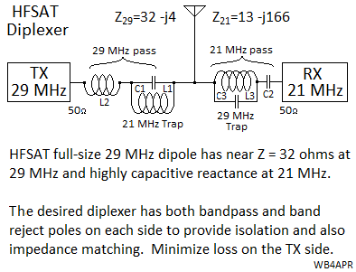

{kind=link}
{kind=link}
{kind=link}
{kind=link}
{kind=link}
{kind=link}
{kind=link}
. .
 OVERVIEW: . HFSAT is a project being investigated and designed by a group of students at the Naval Academy looking for a ride to space that will give it a life span of several years. It continues the PCsat(2001) and PSAT-1(2015) and PSAT-2 (2016) missions but extends it to mobile and portable operators that have Ubiquitous HF radios as well. The HF transponder can relay any waveform already used on HF (that is not corrupted by Doppler) making it a seamless transition to use the satellite when HF propagation is not available.
Operations under ITU Rules: HFsat will operate under the ITU rules of the Amateur Satellite Service since not only does that service currently have allocations for satellite relay on HF, but it is also the only service with the nearly a century of knowledgible operators experience with the HF bands under all conditions. Should the system prove viable, and should other services desire to use the transponder technology, then the lengthy process to obtain Federal HF satcom allocations could be considered. See how HFsat design and operation fit entirely within the ITU International Amateur Radio RULES. The FCC does not issue licenses for spacecraft operating in the Amateur Satellite Service (see public notice) because the satellite is operated under the license of the individual amateur radio operator who has filed the Advance Notice(API) to the FCC and ITU and who is responsible to assure that both the design and operation are within the rules of the ITU as interpreted by the IARU. Our licensed control operator for HFSAT is Todd Bruner, WB1HAI.
HF Uplink . . . . .21.40 MHz, 30 kHz wide multi user bandwidth
HF downlink . . 29.42 MHz, the 30 kHz wide downlink passband
HF Duplexer: . . The schematic at right suggests the design needed for sharing the HF dipole:
HF Transponder Experience: Although some of the very early Amateur Radio satellites used HF transponders, the Russians carried forward with that design well into the ninties. The Naval Academy began experimenting with Amateur HF uplinks on its PCSAT-2 experiment that flew on the outside of ISS in 2007 and then on PSAT which began operating in 2015. The problems with high Doppler on such linear transpodners was significantly solved on these transponders by bringing the downlink down in FM as just a single multiplexed 3 kHz audio waterfall. This way, the UHF doppler was not added to the user signals, and the FM Doppler could easily be tracked during a pass as shown at right.
In HFSAT, the Doppler impact is minimized by using an inverting transponder. This way the doppler on both the uplink and downlink are not added to gether but only the difference in frequency results in Doppler. With operations at 21 and 29 MHz, the carrier frequency delta is only 8 MHz and so the worst case Doppler is only about 2 Hz per second and the nominal doppler change is on the order of about 0.3 Hz per second. This is within the frequency following algorithms of most HF waveforms. Compared to over 30 Hz per second on a typical UHF satellite.
Doppler Compensation: Fortunately, as HF was implemented on PSAT, Andy, K0SM wrote a Doppler pre-compensation algorithm that not only lets a radio user run full-duplex with a separate HF transmitter radio, but it also pre-compensates the uplink for Doppler as shown here. The Doppler compensated uplink comes down as a straight track while others are showing Doppler. Most PSK31 clients can compensate for up to 1 Hz/sec of Doppler on the downlink, but Andy's program makes your signal constant. Other users without compensation, can drift from 1 to 6 Hz per second depending on where they are relative to the track of the satellite.
LIVE Telemetry Downlink for HFsat will also be captured via ground stations in the worldwide ground sttation network where data is captured by Steve Dimse's, K4HG original pcsat.findu.com web page. The packet link is a secondary mission compared to the HF transponder on this spacecraft. The five Telemetry Equations (after the serial number) in standard APRS telemetry format are:
Format: . . . . . T#SSS, VVV, I I I, XXX, YYY, ZZZ, 00011X00
VVV. . . Bus Volts in hundredths
I I I . . . . Bus Current in mA
XXX. . . Temp +Z where T = -1.26E-6*X^3 +0.0028*X^2 -2.215*X + 625
YYY. . . Temp - Z where T = -1.26E-6*X^3 +0.0028*X^2 -2.215*X + 625
ZZZ . . . TempBat where T = -2.57E-6*X^3 +0.0061*X^2 -5.149*X +1475
In the 00011X00 field, only the X has meaning. 0 = DIGI ON, and 1 = Digi off

 Unique HF Link Considerations: There is a unique synergy between the vertically stabilized satelliite HF antenna pattern and the geometry of a typical Low Earth Orbit (LEO) pass as shown above.
Although there is a null directly below the satellite and overhead the typical ground station using a
vertical antenna, the time the satellite is in this null area is very small compared to total pass times.
When low on the horizon, both the satellite and the user antennas are in their main lobes providing maximum
gain at the distant horizons. At the higher elevations, the satellite is 6 dB to 10 dB closer, thus significanly making up for the reduced antenna pattern geometry. In addition,
the duration of satellite pass times above 60 degrees is on the order of 2% or less of total access times and not worth any complexity to work around it.
Unique HF Link Considerations: There is a unique synergy between the vertically stabilized satelliite HF antenna pattern and the geometry of a typical Low Earth Orbit (LEO) pass as shown above.
Although there is a null directly below the satellite and overhead the typical ground station using a
vertical antenna, the time the satellite is in this null area is very small compared to total pass times.
When low on the horizon, both the satellite and the user antennas are in their main lobes providing maximum
gain at the distant horizons. At the higher elevations, the satellite is 6 dB to 10 dB closer, thus significanly making up for the reduced antenna pattern geometry. In addition,
the duration of satellite pass times above 60 degrees is on the order of 2% or less of total access times and not worth any complexity to work around it.
HF SATCOM User Antenna: It is important to note that an HF satellite operates with a much improved link budget (20 dB) because of the lower frqeuency than UHF (though a lot of that gain is lost in the presence of the higher noise floor on HF freuqncies). But with that link advantage and with the larger size of the antennas (dipoles or verticals) the typical user station and spacecraft use omnidirectional antennas. This means there is no requirment for tracking antennas. If the satelilte is in view, it should provide relay service. The most practical HF user antenna is a vertical OMNI (no moving parts to wear out or require rotators) and it has good gain from the horizon upward in all directions.
 BACKGROUND: . HFSAT follows on to several previous student project satellites
which use our VHF command/control/telemetry transceiver and our well established volunteer ground stations. Adding the HF transponder is relativley straight forward needing only the transponder cards and the added HF antenna. The image at right shows the typical test equipment used during integration testing of one of our 1.5U cubesats.
BACKGROUND: . HFSAT follows on to several previous student project satellites
which use our VHF command/control/telemetry transceiver and our well established volunteer ground stations. Adding the HF transponder is relativley straight forward needing only the transponder cards and the added HF antenna. The image at right shows the typical test equipment used during integration testing of one of our 1.5U cubesats.
Operations in the Amateur Satellite Service: All of the transponders on PSAT are operated in the Amateur Satellite Service to encourage amateur radio students, educators and experimenters around the world to contribute additional satellities to this constellation on 145.825 MHz or to build interesting self motivated remote sensors suitable for the uplink channel. See our ocean or bay oceanographic data buoys for examples. This kind of Amateur Radio experimentation fits well in the ITU rules (see PSAT-2 justification) for operating in this service and well serve our educational and outreach goals for student projects encouraging young people to be interested in Science, Technology, Engineering and Math.
Prior HF Transponder Experience: We have flown HF uplink transponders with UHF downlinks on two of our previous cubesat missions. These experiments accepted PSK31 Multi-user FDMA uplinks with a UHF FM audio waterfall downlink as flown on PSAT-1 and PCSAT2 missions. See the full PSK31 design concept here. These text messaging transponders allowed messaging between up to 30 modest ground stations simultaneously. In the example waterfall display above, 10 users are clearly visible. Each user transmits a 31 Hz wide narroband transmission within the 3 kHz wide transponder, and all can be seen simultaneously via the UHF FM downlink. Uplink stations do not need gain antennas on the HF uplink but can use a vertical monopole antenna and 75 Watt SSB transmitter to give the transmit antenna profile as shown above. To calculate the PSK31 link budgets we combined the user TX antenna gain profile with the variation in range gain from the horizon to over 60 degree elevation as shown here at right. The combination gives an uplink power variation per user of less than +/- 4 dB over 90% of the duration of the pass.
HFSAT Differences: But these prior experiments required users to use the HF for uplink and then to have a completely different downlink on UHF that required high gain UHF antennas and tracking systems. The HFSAT transponder, will both uplink and donwlink in the HF bands so only one radio and only an omni antenna is used.
Operation Simplicity: In addition to the simplicity of single-existing-radio operation, and the use of non-tracking omni antennas, a third simplicity that will be demonstrated in this project is the ability to use simple manual (no PC needed) prediction methods of satellite access times. Back in the 1960's at the start of the Amateur Satellite Service, no one had computers and all satellite predicitons were based on simple paper prediction devices such as the OSCARLOCATOR shown here. A polar map of the world had two plastic overlays. one was an overlay of azimuth and elevation angles centerd on the ground users's location, and the other was an overlay of the orbit track. All that was necessary to predict the satellites pass times was the equator crossing time and longitude. Rotatin the ground track overlay pointer to that longitude equator crossing would then be able to show an entire day's worth of passes.
HFSAT Position Reporting: It is also possible to program HFSAT to downlink its position once every minute to users to make them aware of its position. Further, knowing its position, it can be programmed to initiate one-way downlink transmissions to users who may be in radio silence yet need to receive vital information. We can break the earth into multiple oeprating areas and downlink any customisec bulletins over those areas.
Gravity Gradient: With the full length of the HF dipole wire whips, we hope to maintain a vertical attitude of the spacecraft via Gravity Gradient. Calculations from both Samir Rawashdeh of U-Michigan and Hanspeter Schwab of the Colorado Center of Astrodynamics Research both suggest the plot of restoring torque versus tip mass shown at right. On that, we have indicated our estimates of disturbance torqures. This suggest a 2-to-1 factor tip mass would need to be about 34 grams or the mass of six quarters.
The worst stray torque is from the solar panel circulating currents (500 mA in a loop on the side panels). Plus worst case alignment of the 5 NiCd cells with their measured permanent magnitism. We think that both of these can be mitigated with a different layout of the solar panel PCB and degausing of the NiCd cell cases. If we can get this down an order of magnitude, then the tip mass could be on the order of a dime (3g).
Some Design Background: Until we begin to develop the design for the specifics of HFSAT, the links below show some of the design approaches we have used on previous cubesats. These will be updated with HFSAT design data when available.
{kind=link}
{kind=link}
{kind=link}
{kind=link}
{kind=link}
{kind=link}
{kind=link}